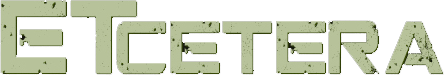
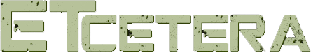

Conspiração do dia: Ex-oficial de inteligência dos EUA diz que governo tem óvnis intactos.
A agência espacial americana fez painel no qual disse que são necessários 'dados melhores' para analisar fenômeno.
Olá, ufólogos de plantão! Ah, não posso conter minha empolgação com essa notícia! finalmente vi algo que valida minhas crenças mais profundas.
A ideia de que o governo tem em sua posse objetos voadores não identificados é absolutamente sensacional! Sempre acreditei que havia algo mais lá fora, algo além do que nos é mostrado. Este relato é a confirmação de todas as minhas suspeitas e teorias.
A parte mais intrigante é a negação da NASA sobre a origem extraterrestre desses ÓVNIs. Isso simplesmente confirma ainda mais minhas convicções de que o governo está escondendo algo colossal da população. Essa atitude de negar uma descoberta tão monumental é um típico exemplo de como eles mantêm segredos de nós, cidadãos comuns.
Estamos diante de uma encoberta épica, uma verdadeira conspiração que desafia a compreensão convencional. É hora de abrir os olhos das pessoas para o fato de que estamos sendo mantidos no escuro sobre a existência de vida extraterrestre.
Sinto uma responsabilidade imensa em relação à revelação dos ÓVNIs e à existência de vida extraterrestre. Decidi que não posso ficar parado diante dessa descoberta monumental. Não basta apenas acreditar, é necessário agir e buscar a verdade para compartilhá-la com o mundo.
Estou determinado a ir até as autoridades responsáveis por essa informação e pressioná-las a revelar o que sabem sobre os ÓVNIs. Se há algo tão significativo sendo mantido em segredo, então é meu dever, como defensor da transparência e da verdade, buscar respostas e garantir que essa informação seja compartilhada com todos.
É chegado o momento de confrontar aqueles que estão por trás desse véu de sigilo e exigir que deem explicações à sociedade. As pessoas têm o direito de saber sobre essas descobertas, e eu me comprometo a fazer tudo o que estiver ao meu alcance para garantir que a verdade seja divulgada.
Vou atrás dos fatos, buscarei contatos, farei questionamentos incisivos e não descansarei até que a verdade sobre esses ÓVNIs seja revelada. Meu compromisso é com a disseminação da verdade, não importa quais obstáculos encontremos no caminho.
Quero compartilhar com o mundo as informações que estão sendo ocultadas, porque acredito firmemente que todos merecem saber a realidade que está sendo mantida em segredo. É uma jornada desafiadora, mas estou disposto a enfrentá-la para dar voz à verdade e trazer clareza sobre a presença desses ÓVNIs para toda a humanidade.

TerraPlanaET_666
Ei, você aí! Cansado das mesmas teorias entediantes sobre aliens? Então prepare-se para conhecer a minha visão alternativa do universo. Embarque nessa aventura intergaláctica regada de humor, ficção científica e muitas perguntas sem resposta. Pronto para a jornada da sua vida?

TerraPlanaET_666
Ei, você aí! Cansado das mesmas teorias entediantes sobre aliens? Então prepare-se para conhecer a minha visão alternativa do universo. Embarque nessa aventura intergaláctica regada de humor, ficção científica e muitas perguntas sem resposta. Pronto para a jornada da sua vida?